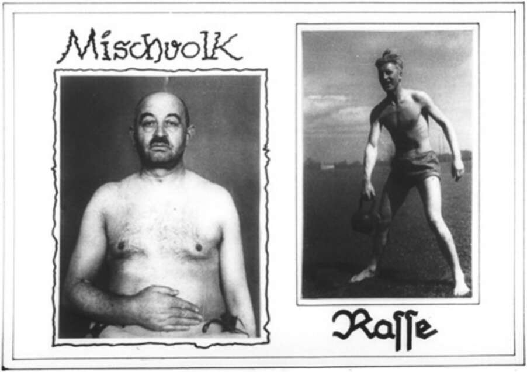

grave but that of racism in general. When he launched World War Two, he compelled his enemies to make clear distinctions between ‘us’ and ‘them’. Afterwards, precisely because Nazi ideology was so racist, racism became discredited in the West. But the change took time. White supremacy remained a mainstream ideology in American politics at least until the 1960s. The White Australia policy which restricted immigration of non-white people to Australia remained in force until 1973. Aboriginal Australians did not receive equal political rights until the 1960s, and most were prevented from voting in elections because they were deemed unfit to function as citizens. MiscnvolK 30. A Nazi propaganda poster showing on the right a ‘racially pure Aryan’ and on the left a ‘cross-breed’. Nazi admiration for the human body is evident, as is their fear that the lower races might pollute humanity and cause its degeneration. The Nazis did not loathe humanity. They fought liberal humanism, human rights and Communism precisely because they admired humanity and believed in the great potential of the human species. But following the logic of Darwinian evolution, they argued that natural selection must be allowed to weed out unfit individuals and leave only the fittest to survive and reproduce. By succouring the weak, liberalism and
